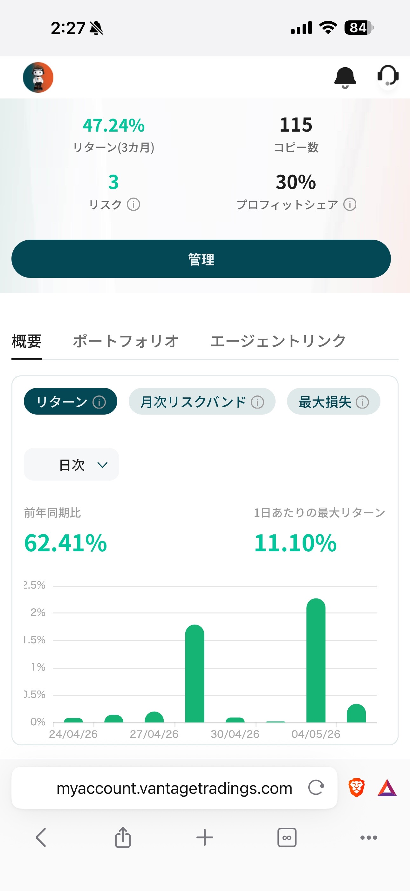
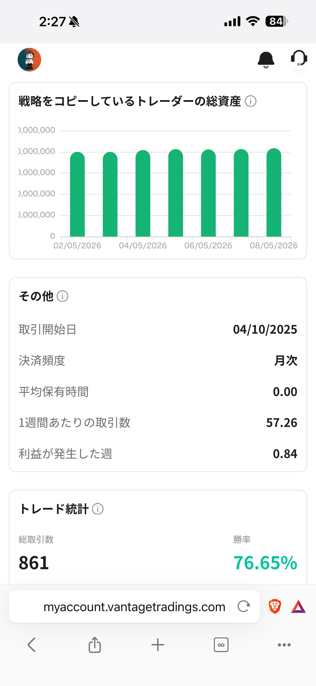
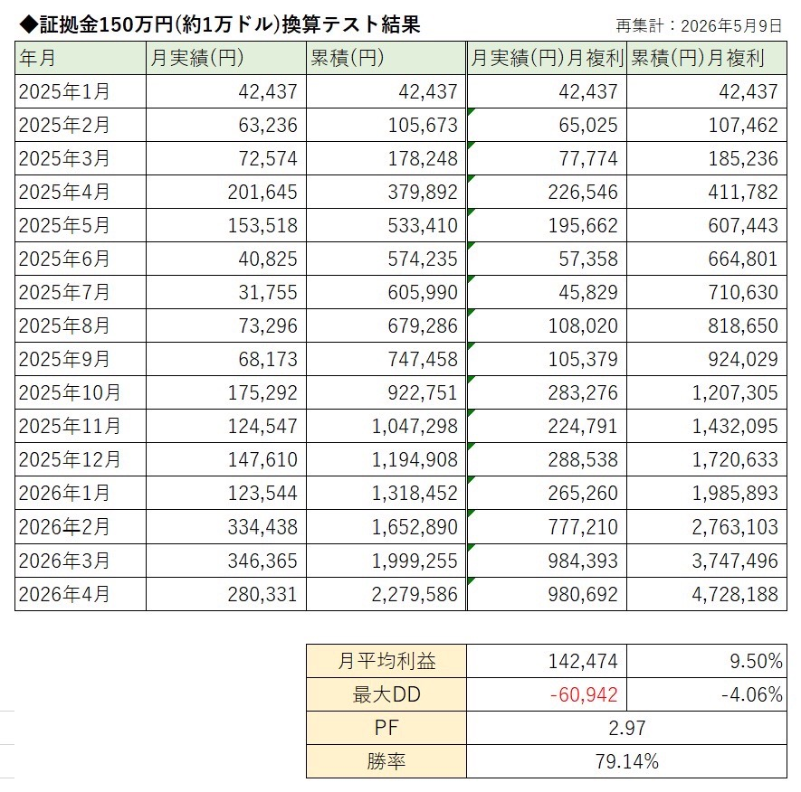
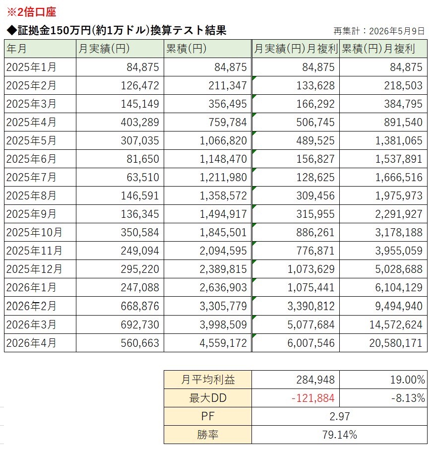
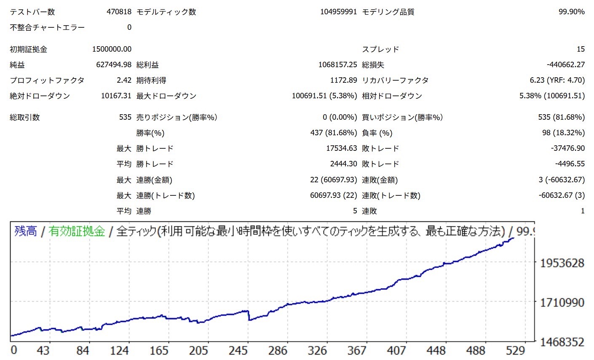
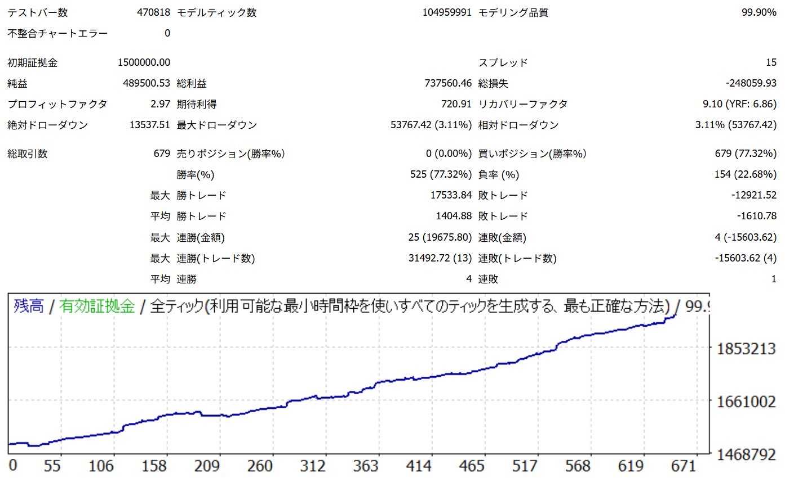
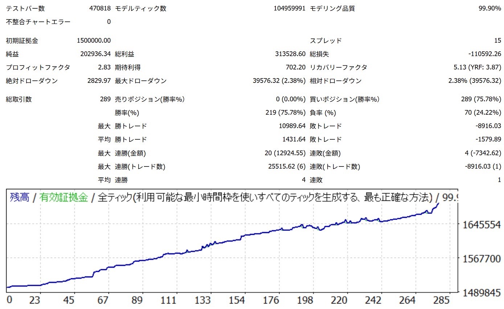
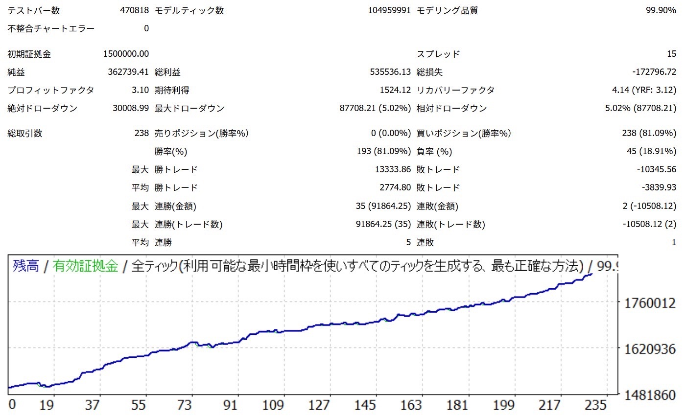
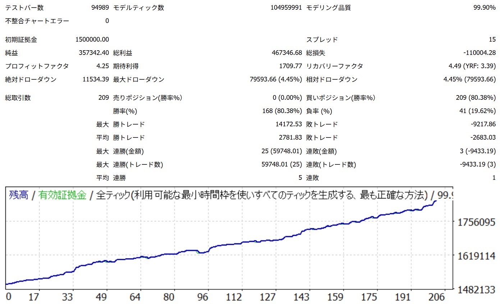

◆ Gold Auto Trading
オプチャ参加
不動産だけに資金を固定せず、余剰資金の一部をどう活かすか。
実際に稼働しているゴールド自動売買の実績を、
オープンチャットで継続的に共有しています。
※ 販売・勧誘はありません。実運用共有コミュニティです。
収益物件を持ち、安定したキャッシュフローを得ながら資産を拡大する。
それは多くの投資家が描く、堅実な未来設計の王道です。
しかし今、こんな状況に直面していませんか？
すべて実際の口座で稼働中の数値です

Vantage Trading 実口座画面

取引統計・勝率データ
※ 掲載している数値は過去および実運用上の結果であり、将来の利益を保証するものではありません。
証拠金150万円（約1万ドル）換算での月次実績一覧
通常口座（1倍）

2倍口座

実運用口座の残高推移。
複数の設定で安定した右肩上がりを記録しています。





グラフをAIに評価してもらう
上のグラフ画像を保存して、ChatGPTやClaudeなどのAIに
「このトレード記録を投資家目線で評価してください」
と質問してみてください。
第三者の視点で運用品質を客観的に確認することができます。
不動産投資も、自動売買も、長く続けることが最大の武器になります。
最大ドローダウンを常に一定水準以内に抑える設計で運用しています。含み損が基準を超えた場合は自動または手動で制御します。物件購入と同じく、「損切りラインを決めてから動く」発想です。
証拠金に対して適切なロットサイズを維持します。過剰なレバレッジをかけず、持続可能な運用を心がけています。利回りを追いすぎず、「続けられる設計」を優先します。
相場の急変動（重要指標発表・地政学リスク）時には手動で稼働を一時停止します。リスクを取らない判断も、運用の一部です。この判断履歴もオープンチャットで共有しています。
月利20〜30%の夢より、月利5〜10%を安定して積み上げる現実を選んでいます。不動産の表面利回りに近い感覚で、焦らず長期的に積み上げることを目標にしています。
「勝ち続けるシステムより、
負け続けないシステムを目指す。」
この運用スタイルは、不動産投資家が持つ
思考・資金感覚と特に相性が良いと感じています。
毎月の家賃収入を積み上げる感覚に近い、月次利益の積み上げ型運用です。「月ごとの収支」を重視する投資家にとって、直感的に評価しやすいスタイルです。単発の大きな利益より、継続的な小さな利益を重視する点が共通しています。
表面利回り7〜10%を基準に物件を選ぶ感覚を持つ方なら、月次利益の数字も自然に評価できます。FXや自動売買に馴染みがなくても、投資家としての判断軸がそのまま活きます。
融資待ちや次の物件準備中の「眠った資金」を、全力投入ではなく余剰資金の一部として活用できます。不動産購入のタイミングや与信に影響しない範囲での運用が前提です。
不動産（実物資産）× ゴールド自動売買（金融資産）。相関性の低い資産を組み合わせることで、ポートフォリオ全体のリスク分散になります。特定の資産クラスへの集中リスクを自然に緩和できます。
「余剰資金の一部」という位置づけが明確です。不動産購入資金や生活防衛費には一切手をつけない、という大原則のもとで運用情報を共有しています。コミュニティ内でもこの原則を常に共有しています。
販売・勧誘が目的ではありません。
不動産投資家向けの余剰資金運用について、
実運用をリアルタイムで共有するコミュニティです。
LINEオープンチャットは無料でご参加いただけます。
販売・勧誘・商品購入は一切ありません。
純粋に実運用の情報を共有するコミュニティです。
※ 現在、実運用メンバー向けに限定公開中
※ オープンチャット参加後にEAをご利用される場合は、月額固定の無料版と有料版がございます。
※ ご利用の際は別途お問い合わせが必要となります。